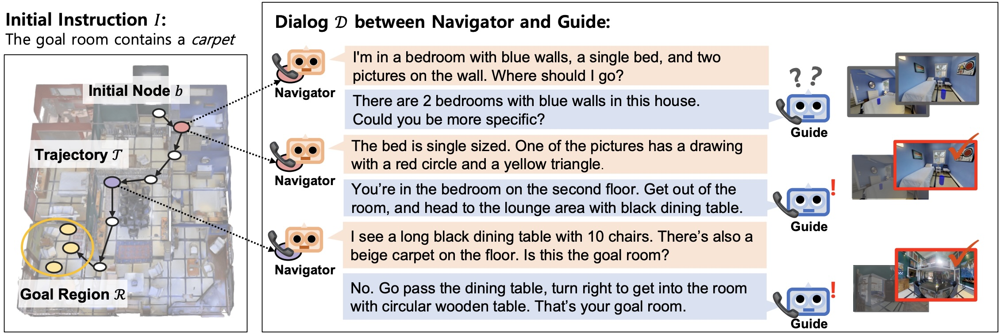

Workshop Challenge
The DialNav Challenge
DialNav is a dialog-aware embodied navigation task where a Navigator and a Guide cooperate to reach the target location.

Task
DialNav evaluates a navigation-and-dialog loop: the Navigator starts from an initial node with only a vague instruction, while the Guide helps it reach the target location through dialog when needed.
Navigator Agent
- Starts from a given location with an ambiguous instruction.
- Moves through the environment toward the target region.
- Asks questions when more guidance is needed.
Guide Agent
- Knows the environment and the target location.
- Does not know the Navigator's current location.
- Answers questions to help the Navigator reach the target.
- We release Navigator and Guide code, along with trained weight sets derived from the RAIN and RAINbow papers.
- These released models follow a modular design, but the challenge allows flexible agent designs.
- These models can be used as-is or as a starting point for further development.
- Participants develop their own Navigator, Guide, or both.
How to Participate
- Build your own agents based on the DialNav baseline code and GitHub repository.
- Upload the required log files to the Leaderboard.
- Top performing teams will be asked to submit a reproducible GitHub repository and a technical report.
We highly recommend to fill out the subscription form to stay updated on the challenge announcements or any code updates: Subscribe
Provided Training Datasets
The challenge provides the following two datasets for training, but participants can freely use any additional data, pretrained models, or external resources as long as they are clearly described in the technical report.
Rules & Policy
- Participants may modify the Navigator, the Guide, or both.
- Communication between the Navigator and Guide must use natural language only; other modalities, including images, are not allowed.
- Manual annotation of the evaluation set is not allowed.
- Using val-seen, val-unseen, or test data to directly train or adapt the evaluation environment is not allowed.
- Because this challenge uses a Guide Agent setup, the ground-truth target location is disclosed for the test dataset. However, this disclosure is provided only for the challenge protocol and evaluation setup, and parameter tuning on the test dataset is not allowed.
- Dialog and navigation turns are not limited.
- The Navigator cannot re-guess once the episode ends, whether or not the target is reached.
- External datasets, pretrained models, and commercial APIs are allowed and must be clearly described in the technical report.
- Technical report must include the seeds and other execution details needed to reproduce the reported results. If a submission cannot be reproduced or the scoring cannot be reconstructed, it may be marked invalid.
Dates
- Jun 3 - Aug 12 - Challenge period
- Aug 15 - Code and technical report submission deadline
- Aug 22 - Notification
- TBA - Workshop presentation
Organizers
-
 Leekyeung Han Korea University
Leekyeung Han Korea University -
 Hyunji Min Korea University
Hyunji Min Korea University -
 Jinseong Jeong Korea University
Jinseong Jeong Korea University -
 Paul Hongsuck Seo Korea University
Paul Hongsuck Seo Korea University
Contact: happilee12@korea.ac.kr
Citation
If you use the DialNav challenge materials, please cite the relevant papers below.
DialNav Citation
@inproceedings{han2025dialnav,
title={DialNav: Multi-turn Dialog Navigation with a Remote Guide},
author={Han, Leekyeung and Min, Hyunji and Hwangbo, Gyeom and Choi, Jonghyun and Seo, Paul Hongsuck},
booktitle={Proceedings of the IEEE/CVF International Conference on Computer Vision (ICCV)},
year={2025}
}RAINbow Citation
[TBA - insert the official RAINbow paper citation here]Sponsors
We gratefully acknowledge the generous support of our sponsors.
Stay Updated
Subscribe for challenge updates and announcements: